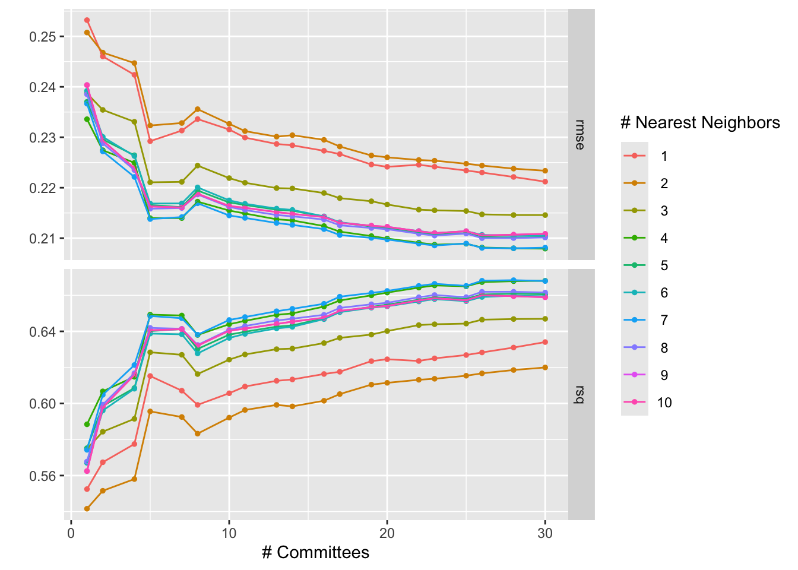

log10(exCs137 / total Cs137) — Cubist global vs. per soil type
Author
Franck Albinet
Published
May 19, 2026
Does soil type matter for MIR-based prediction of the exchangeable-to-total ¹³⁷Cs ratio? This notebook addresses that question with two complementary analyses:
Global Cubist model — trained on all soil types combined, with test-set metrics broken down by Soil_type_describe to reveal where the single model struggles.
Per-soil Cubist models — one independent model per soil type group (minimum 60 samples), each with its own Kennard-Stone split and hyperparameter tuning.
Comparing the variable importance plots across setups should show whether certain spectral regions are universally predictive or carry signal only within specific soil classes.
WET_PATH <-here("data-raw", "WetData_2013_2023.csv")SPECTRA_PATH <-here("data-raw", "1320_Jumpei_spectra_outlier_full.rds")BY_WET <-"ID"BY_SPECTRA <-"sample_id"TARGET <-"exCs137_totalCs137"EXCLUDE_YEARS <-c(2021, 2022, 2023)RESAMPLE_BY <-5LSG_W <-15L # tuned in 00_tune_sg.qmdSG_P <-3L # tuned in 00_tune_sg.qmdSG_M <-1L # first derivativeSEED <-123LTRAIN_PROP <-0.80CALIB_PROP <-0.70KS_MAX_EXPL_VAR <-0.99MIN_GROUP_N <-60L # groups below this are skippedset.seed(SEED)
Load & Prepare
Code
raw <-load_raw_data(wet_path = WET_PATH,spectra_path = SPECTRA_PATH,by_wet = BY_WET,by_spectra = BY_SPECTRA)
Years 2021–2023 are excluded because measurement protocols changed; samples with missing or non-positive target values are removed before any split so the log transform is well-defined.
Code
prepared <- raw |>filter(!year %in% EXCLUDE_YEARS,!is.na(.data[[TARGET]]), .data[[TARGET]] >0 )nrow(prepared)
[1] 1592
Shared Cubist specification
Cubist is chosen for its interpretability: it produces a set of rule-based linear models whose variable usage statistics give a direct measure of spectral feature importance. The same specification and grid are reused for every model in this notebook to keep comparisons fair.
The tuning grid searches 20 values of committees (1–30) and 10 values of neighbors (0–9), for 200 candidates evaluated on the validation set.
The dataset is split using the Kennard-Stone algorithm on PCA scores of the SNV-preprocessed spectra. This guarantees that the training set covers the spectral space as uniformly as possible, rather than leaving gaps that random sampling might create. The split proportions (80 % train pool / 70 % calibration) are chosen to leave enough samples per soil type in the per-soil section while keeping a meaningful test set.
The preprocessing chain follows the pipeline established in 01_cs137_ratio.qmd:
log₁₀ transform of the outcome compresses the right-skewed ratio distribution and stabilises variance.
Spectral resampling (every 5 cm⁻¹) reduces collinearity between adjacent channels without discarding information.
SNV removes multiplicative scatter effects caused by differences in particle size and sample packing.
Savitzky-Golay first derivative (window 15, degree 3) suppresses baseline drift and sharpens spectral features; parameters were tuned in 00_tune_sg.qmd.
Code
spc_cols <-grep("^X\\d+", names(training(global_split)), value =TRUE)meta_cols <-setdiff(names(training(global_split)), c(TARGET, spc_cols))global_rec <-recipe(training(global_split)) |>update_role(all_of(TARGET), new_role ="outcome") |>update_role(all_of(spc_cols), new_role ="predictor") |>update_role(all_of(meta_cols), new_role ="metadata") |>step_log(all_outcomes(), base =10) |>step_resample(by = RESAMPLE_BY) |>step_snv() |>step_sg(w = SG_W, p = SG_P, m = SG_M)
Tune
The workflow bundles the recipe and model specification. Hyperparameters are selected by minimising RMSE on the held-out validation set.
The tuning surface below shows how RMSE and R² vary with the number of committees and neighbours. More committees generally improve predictions by boosting, while neighbours control the degree of instance-based correction applied at prediction time.
Code
autoplot(global_tuned)

Figure 1
Final fit
The best hyperparameters are locked in and the model is re-trained on the full training set before evaluation on the held-out test set — the only time test data are touched.
A single global model may hide heterogeneous behaviour across soil types. The table below breaks down test-set performance by Soil_type_describe, using the same predictions — no additional model fits are involved.
# A tibble: 21 × 4
Soil_type_describe .metric .estimator .estimate
<chr> <chr> <chr> <dbl>
1 Andosols rmse standard 0.317
2 Forest soil rmse standard 0.213
3 Glay soil rmse standard 0.210
4 Lowland soil rmse standard 0.260
5 Peat soil rmse standard 0.239
6 Red yellow soil rmse standard 0.225
7 <NA> rmse standard 0.190
8 Andosols rsq standard 0.735
9 Forest soil rsq standard 0.554
10 Glay soil rsq standard 1
11 Lowland soil rsq standard 0.698
12 Peat soil rsq standard 0.263
13 Red yellow soil rsq standard NA
14 <NA> rsq standard 0.693
15 Andosols mae standard 0.276
16 Forest soil mae standard 0.157
17 Glay soil mae standard 0.203
18 Lowland soil mae standard 0.201
19 Peat soil mae standard 0.206
20 Red yellow soil mae standard 0.225
21 <NA> mae standard 0.142
Variable importance
Cubist reports variable usage as the percentage of rules and linear model terms in which each predictor appears. Plotting this against wavenumber gives a spectral importance profile directly interpretable in terms of known soil absorption bands.
If soil mineralogy and organic matter content vary substantially between Soil_type_describe groups, a single global model may be suboptimal for all of them. Here, an independent Cubist model is fitted for each group with at least 60 samples. Each model gets its own Kennard-Stone split and its own hyperparameter search — there is no information sharing between groups.
Group sizes
Code
group_sizes <- prepared |>count(Soil_type_describe, name ="n") |>arrange(desc(n))group_sizes
fit_soil_cubist() encapsulates the full pipeline for a single group: split, recipe, workflow, tuning, and final fit. Applying it via map() over the group_split() result keeps the per-group logic in one place and returns a uniform list structure that downstream display code can iterate over.
Code
# Fit a Cubist workflow on one subset; returns a named listfit_soil_cubist <-function(grp, label =unique(grp$Soil_type_describe)) { split <-ks_split(grp, train_prop = TRAIN_PROP, calib_prop = CALIB_PROP) spc_cols <-grep("^X\\d+", names(training(split)), value =TRUE) meta_cols <-setdiff(names(training(split)), c(TARGET, spc_cols)) rec <-recipe(training(split)) |>update_role(all_of(TARGET), new_role ="outcome") |>update_role(all_of(spc_cols), new_role ="predictor") |>update_role(all_of(meta_cols), new_role ="metadata") |>step_log(all_outcomes(), base =10) |>step_resample(by = RESAMPLE_BY) |>step_snv() |>step_sg(w = SG_W, p = SG_P, m = SG_M) wf <-workflow() |>add_recipe(rec) |>add_model(cubist_spec) tuned <-tune_grid( wf,resamples =validation_set(split),grid = cubist_grid,metrics =metric_set(rmse, rsq) ) final <- wf |>finalize_workflow(select_best(tuned, metric ="rmse")) |>last_fit(split)list(label = label,n =nrow(grp),split = split,tuned = tuned,final = final )}
For each group, the observed-vs-predicted plot and the spectral importance profile are shown side by side. Key questions: does predictive accuracy improve relative to the global model? Do the important spectral regions shift between soil types, suggesting that different mineral or organic components drive Cs exchangeability depending on soil class?
The table below collects test-set RMSE and R² for every per-soil model, sorted by R². Comparing these figures against the corresponding rows in the global-model breakdown above quantifies the gain — or lack thereof — from soil-type stratification.
Within Lowland soil, two distinct agricultural contexts coexist: paddy fields (flooded rice cultivation, n = 684) and upland fields (n = 303). Flooding cycles alter soil redox chemistry and organic matter dynamics, which could affect both Cs exchangeability and its spectral expression. A separate Cubist model for each field type tests whether this distinction matters for prediction and whether the important spectral features shift between contexts.